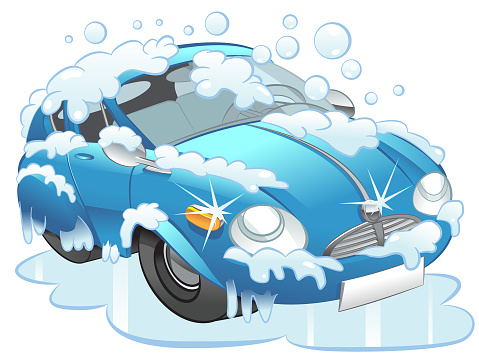

La empresa ofrece los siguientes servicios:
Lavado exterior: Es la limpieza básica del exterior del vehículo, que implica el uso de agua a presión, champú especializado y cepillos suaves para eliminar la suciedad, el polvo y los residuos. También se incluye el secado del vehículo.
Lavado interior: Consiste en limpiar y aspirar el interior del automóvil, incluyendo los asientos, alfombras, paneles de puertas y el tablero. Se utilizan productos de limpieza adecuados para eliminar manchas, polvo y olores no deseados.
Lavado de motor: Este servicio se centra en la limpieza y desengrase del motor y sus componentes. Se utiliza agua a presión y productos especializados para eliminar la suciedad acumulada y mejorar el rendimiento del motor.
Engrasado: Se le da servicio a la parte inferior de vehículo donde se utiliza agua a presión para la limpieza, luego se le aplica diésel para que el auto este lubricado y se rellenan las graseras, dependiendo del estado de estas, se realiza con las boquillas de engrasadora, o con aguja, pero este último es si el vehículo no cuenta con dichas boquillas y es necesario el rellenarlas.